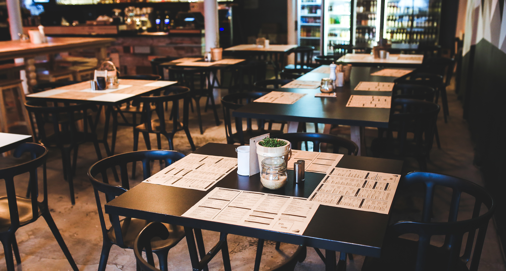

INTRODUCE

마늘과 와인의 절묘한 조화!
세계 최대 마늘 테마 이탈리안 레스토랑, Mad for Garlic
마늘을 이용한 이태리 음식과 다양한 와인 및 음료를 편안하게
즐길 수 있는 새로운 개념의 Italian Wine Bistro 입니다.
중세 유럽풍의 웅장함이 느껴지는 공간에
다양한 와인이 갖추어진 Full Bar,
요리사들이 요리하는 모습을 감상할 수 있는
Open Kitchen과 Food Bar,
독특한 스타일의 서비스 등
다채로운 볼거리와 새로운 즐거움이 가득합니다.